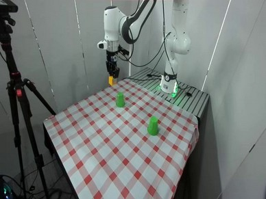
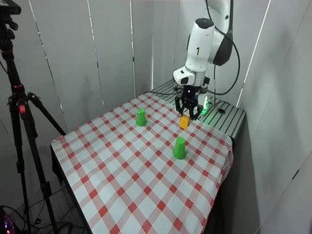
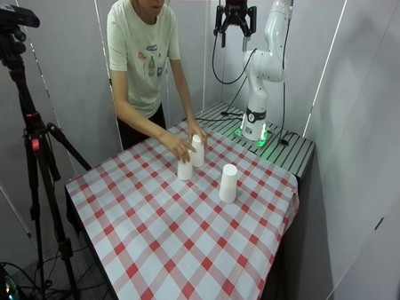
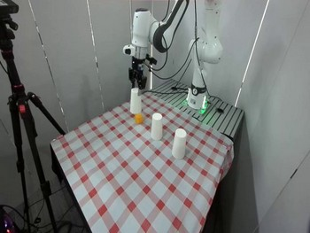
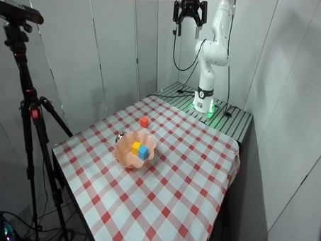
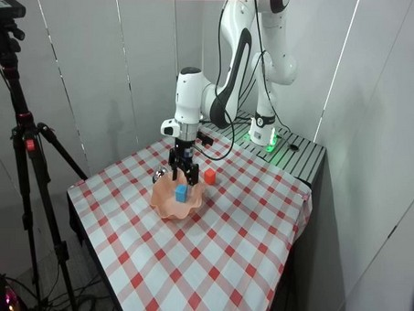
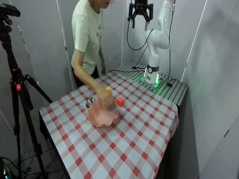
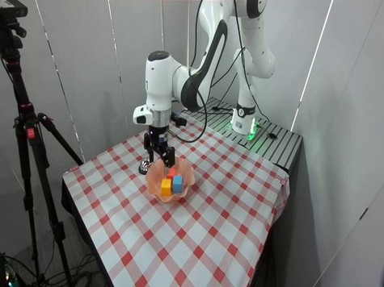

SwingXtimes
+88.7 pp96.0% vs 7.3%
Event-Driven Memory Updates
for History-Dependent Manipulation
Similar images can correspond to different stages of a task. If a robot records completion too early, its memory runs ahead of execution and misleads the next decision. EventSync uses visual and motion evidence to confirm progress before updating task memory.
Illustrative reference clips; execution at 2.5×.
16 tasks × 50 episodes
EventSync + FrameSamp+Modul
vs. best benchmark-reported baseline
Baselines: benchmark-reported repeated-run means. EventSync: 50 episodes per task.
| Task | π₀.₅ | GroundSG + QwenVL | MemER | FrameSamp+Modul | EventSync | EventSync + FrameSamp+Modul |
|---|
Success examples from EventSync + FrameSamp+Modul; gains over GroundSG + QwenVL.
96.0% vs 7.3%
100.0% vs 24.0%
68.0% vs 15.1%
40.0% vs 6.7%








arXiv:2610.27917
@misc{zhao2026eventsync,
title = {EventSync: Event-Driven Memory Updates for History-Dependent Manipulation},
author = {Jingjiao Zhao and Dong Jing and Mingyu Cao and Ruochuan Shi and
Xiansheng Chen and Pengwei Wang and Zhiwu Lu},
year = {2026},
eprint = {2610.27917},
archivePrefix = {arXiv},
primaryClass = {cs.RO},
url = {https://arxiv.org/abs/2610.27917}
}